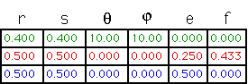

| Splittig the fractal into three pieces is not difficult. |
|
| Often it is convenient to specify a point as the origin of the
coordinate system. |
| The lower left corner can be a good choice, but in general,
use any symmetry available, unless there is a compelling reason to do differently. |
|
| Here's the IFS table that generated this fractal. |
|  |
| What's wrong with the e and f values? |
| To answer this question,
how does the gasket picture change if you
multiply all the e and f values by the same number? |
| Finally, here is another way to find the parameters, by measuring the
positions of the images of three
points. |